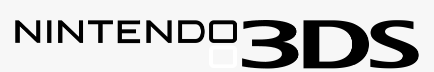

Tenor-Z's House
 Development and Projects
Development and Projects
Development and Projects- A Malicious Trojan written in Python for Windows machines
- A Wiper Homebrew Application for the Nintendo Switch
- Developing Homebrew for the Nintendo DSi
Check out my projects below!
Menu
 Nintendo 3DS Development
Nintendo DSi Development
Malware Writing